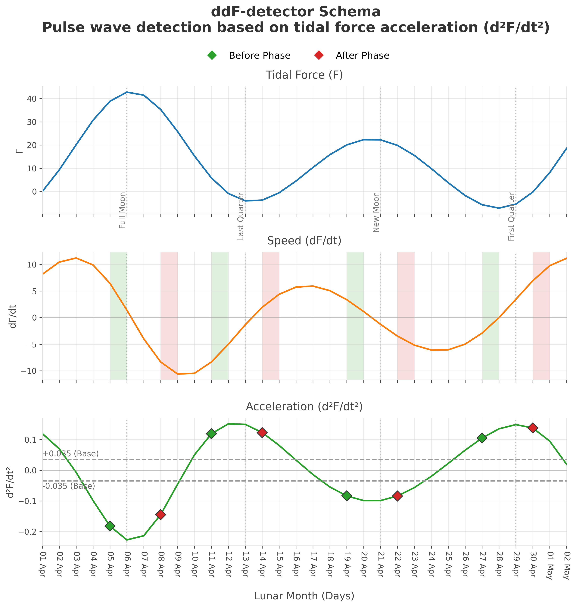
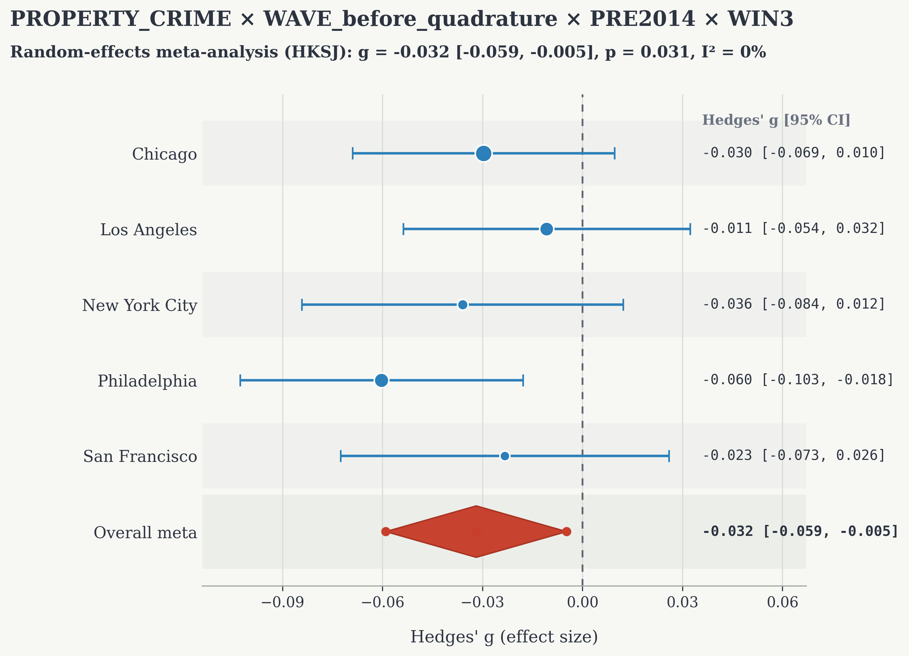
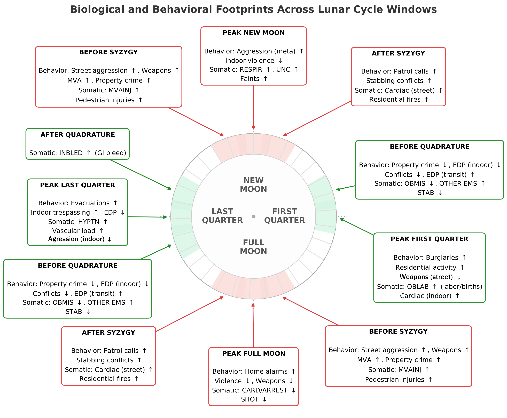

Seleno-Gravitational Rhythm (SGR): Impulsive Lunar Tidal Waves as a Modulator of Human Consciousness, Behavior, and Somatic Health
A cross-city meta-analysis of criminal and medical statistics in U.S. metropolitan areas (2001–2025). Author: Artem Tysiatskii. Version 1.1, 2026. DOI: 10.5281/zenodo.20518660.
1. One-paragraph answer
Seleno-Gravitational Rhythm (SGR) is an open-source framework for testing associations between lunar tidal dynamics and population-level behavioral, crime, and health data. It uses an original ddF detector for impulsive jumps in the second derivative of the tidal potential (d²F/dt²) and applies it to seven official databases from five U.S. metropolitan areas (Chicago, Los Angeles, New York, Philadelphia, San Francisco) covering 2001–2025 — more than 106 million records of criminal statistics, ambulance dispatches, and 911 calls.
A cross-city meta-analysis with HKSJ correction revealed a reproducible signal of reduced property crime within the impulsive-wave window preceding lunar quadrature (g = −0.032, p = 3.11×10⁻², I² = 0% across five cities). The single-database analysis of unique databases (NYC 911, NYC EMS) with a full robustness battery yielded 14 TIER1 and 17 TIER2 findings.
2. Research question & hypothesis
The contemporary literature on lunar influence typically restricts itself to the four static lunar phases and yields contradictory results — largely because what may be biologically meaningful is not only the absolute level of the tidal background, but also the dynamics of its variation, including the first and second derivatives of the tidal potential.
The lunar tidal potential contains at least two independent, biologically relevant layers: (i) a static phase layer — the traditional four lunar phases as a marker of long-period neuroendocrine modulation; and (ii) an impulsive wave layer — short-duration jumps in the second derivative d²F/dt² acting as a biomechanical trigger for mechanosensitive tissues. Both layers are biologically meaningful, have different temporal profiles, and different molecular targets.
Elements of novelty: (1) for the first time, a detector of impulsive jumps in d²F/dt² (the ddF detector) has been developed and applied to city-level social and medical time series; (2) for the first time, a cross-city meta-analysis of lunar influence on criminal and medical statistics across five U.S. metropolitan areas has been conducted using a random-effects model with HKSJ correction; (3) for the first time, the phase and wave layers have been formally separated and compared through an orthogonal Branch A / Branch B decomposition; (4) for the first time, a robust syzygy/quadrature dichotomy has been demonstrated on an array of more than 106 million records.
3. Data
Seven open official databases were used, accessed via the portals data.cityofnewyork.us, data.lacity.org, data.cityofchicago.org, opendataphilly.org, and data.sfgov.org.
| Dataset | Period | Records |
|---|---|---|
| Chicago Crimes | 2001-01-01 — 2026-02-20 | ~7,000,000 |
| Los Angeles Crimes | 2010-01-01 — 2022-12-31 | ~3,000,000 |
| New York City Crimes | 2008-01-01 — 2023-12-31 | ~7,300,000 |
| Philadelphia Crimes | 2006-01-01 — 2026-02-26 | ~3,500,000 |
| San Francisco Crimes | 2003-01-01 — 2017-12-31 | ~2,000,000 |
| New York City 911 Calls | 2018-01-01 — 2025-12-31 | ~54,900,000 |
| New York City EMS | 2005-01-01 — 2025-08-31 | ~28,700,000 |
| Total | ~106,400,000 |
The analysis is stratified by epoch: PRE2014 (through 2014 inclusive, a nested sensitivity sub-epoch preceding the wave of decriminalization in several U.S. states), PRE (the full pre-pandemic period through March 1, 2020 — the principal analysis epoch), and POST (from 2022 onward, excluded from baseline conclusions due to societal shifts). The COVID epoch (2020-03-01 — 2021-12-31) is fully excluded. Due to the heterogeneous taxonomy of police codes, two independent groupings were built: a pure table (individual "clean" codes, e.g. PURE_ROBBERY) and semantic families (aggregated clusters, e.g. PROPERTY_CRIME) — the full SEMANTIC_MAP is published in the repository.
4. Methodology
All astronomical parameters were computed using the Skyfield library (v1.53) and JPL DE421 ephemerides for local noon in each city. The full lunar-solar tidal scalar F(t) and its first (dF/dt) and second (d²F/dt²) derivatives are computed by finite differences with a 1-hour step.
The ddF detector
A formal procedure with thresholds THR_BASE = 0.035 and THR_STEP = 0.020 (calibrated over a 24-year interval and fixed prior to the main run) flags short-lived d²F/dt² jumps and classifies them by nearest lunar phase (syzygy/quadrature) and position (before/after), yielding seven binary triggers. Events are registered within a ±1…2-day window of the phase and very rarely coincide with the phase itself — i.e., wave triggers are constructively orthogonal to static phase labels.

Detrending and orthogonal Branch A / Branch B decomposition
Each log1p(counts) series is processed by OLS regression: a degree-4 polynomial trend, an annual Fourier basis (3 harmonics), day-of-week dummies, U.S. federal holidays with ±1-day lags; residuals are winsorized (1%/1%). Branch A (for PHASE_ triggers) excludes lunar variables. Branch B (for WAVE_ triggers) includes 12 static lunar dummies — so all WAVE_ effect estimates are lower bounds of the true wave signal.
Effect size & meta-analysis
The primary metric is Hedges' g with small-sample correction; a nonparametric Mann–Whitney U-test is additionally computed. BH-FDR is applied within strata (epoch × trigger family × lag). Cross-city aggregation is a two-stage random-effects meta-analysis: within-city fixed-effect pooling first, then between-city aggregation with HKSJ correction (df = k − 1, city as the unit of replication). Single databases (NYC 911, NYC EMS) undergo an internal robustness battery: block-permutation (14 and 28 days), circular-shift (≥ 7 days), bootstrap 95% CI, slice stability (5 slices), placebo resampling, and a quasi-Poisson GLM sanity check.
TIER classification
Cross-city: TIER1_PUBLISH (p_meta < 0.005, k ≥ 3, I² < 40%), TIER2_PROMISING (p_meta < 0.010, k ≥ 3, I² < 60%), TIER3_SIGNAL (p_meta < 0.050, k ≥ 2). Single-database: TIER1_PUBLISH (p_MW < 0.005, slice_sign_frac ≥ 0.80, 3/3 permutation pass, placebo pass), TIER2_PROMISING (p_MW < 0.010, slice_sign_frac ≥ 0.75, ≥ 2/3 permutation pass, placebo pass), TIER3_SIGNAL (p_MW < 0.050, slice_sign_frac ≥ 0.50).
5. Core findings
The final analysis was supplied with 10,192 valid rows from the meta-pipeline and 19,916 rows from the single-database pipeline. Of 1,144 family-level rows for primary triggers, 1,139 were classified NULL, and only 5 TIER3-level rows remained significant — the method does not "find" effects everywhere.
The headline cross-city signal
PROPERTY_CRIME × WAVE_before_quadrature × PRE2014 × WIN3: g_meta = −0.032, 95% CI [−0.059, −0.005], p = 3.11×10⁻², I² = 0%, k = 5 cities (21 effect-size contributions: Chicago = 3, LA = 7, NYC = 4, Philadelphia = 4, SF = 3). Reproduced in the full PRE epoch: g_meta = −0.023, 95% CI [−0.045, −0.005], p = 4.07×10⁻², I² = 0%.

The magnitude g_meta ≈ −0.03 is objectively small on Cohen's d scale, but must be interpreted in the context of the noisy urban environment and the deliberately conservative design: WAVE signals are estimated on residuals where static phases have already absorbed part of the wave variance, and HKSJ at k = 5 imposes a conservative penalty. The main argument is not the size of the effect, but the combination of robustness, cross-city homogeneity (I² = 0%), and temporal replication.
Additional cross-city signals (TIER3)
- PURE_ROBBERY × WAVE_before_quadrature × PRE2014 × lag=0: g = −0.085, 95% CI [−0.170, −0.001], p = 4.85×10⁻², I² = 0%, k = 5.
- PURE_VEHICLE_THEFT × PHASE_FirstQ × PRE × lag=−1: g = −0.100, 95% CI [−0.197, −0.004], p = 4.49×10⁻², I² = 0%.
- PURE_VEHICLE_THEFT × PHASE_Quadrature × PRE × lag=−1: g = −0.072, 95% CI [−0.142, −0.002], p = 4.60×10⁻², I² = 0%.
All five cross-city TIER3 signals point the same way: property crime and related acquisitive offenses decrease in windows adjacent to quadrature.
Findings on the single databases (NYC 911, NYC EMS)
A total of 14 TIER1 + 17 TIER2 + 115 TIER3 signals were recorded. Examples of TIER1/TIER2: OTHER EMS × WAVE_before_quadrature (g = +0.103 in PRE, +0.121 in PRE2014, TIER1 in both epochs); HYPTN (hypertensive crisis) × PHASE_LastQ (g = +0.156, TIER1); OBLAB (labor) × PHASE_FirstQ (g = +0.201, TIER1); OBMIS (threatened miscarriage) × WAVE_before_quadrature (g = −0.172/−0.117, replicated across two epochs); indoor EDP × WAVE_before_quadrature (g = −0.214, TIER2, a paradoxical decrease — yet an increase in public transit, g = +0.363: the scene determines direction); CVA (stroke) × WAVE_event (g = +0.082, TIER3, signal specific to the wave branch).
The syzygy/quadrature dichotomy
A cross-cutting structural fingerprint in the data: for the heart, syzygy reduces acute arrests while quadrature increases acute vascular events; for property, quadrature reduces crime (a robust cross-city signal); for psychiatry, fewer calls on phases, and even fewer on quadrature (except in public transit). Such a consistent dichotomy cannot be explained by random noise — it requires a physical mechanism acting differently in syzygy and quadrature windows.

6. Safeguards against artifacts
Alternative explanations are systematically considered and countered (article §6): (A) moonlight as a trivial confounder — quadrature is physically less luminous than the full moon, yet most wave signals concentrate there; (B) a calendar-structure artifact — all calendar variables are included in detrending; (C) a COVID-period artifact — the period is fully excluded; (D) a multiple-comparisons artifact — BH-FDR is applied, and the signal reproduces across two epochs and pure samples; (E) a family-aggregation artifact — pure samples confirm the sign with I² = 0%; (F) a standard-error artifact at small k — the conservative HKSJ correction is applied; (G) a joint-seasonal-movement artifact — the 29.53-day synodic cycle is not synchronous with the Gregorian calendar, and circular-shift permutation (≥ 7 days) destroys the effect, confirming phase specificity; (H) a registration-policy-change artifact — this is precisely why PRE2014 was chosen, preceding the decriminalization wave; (I) a "winner's curse" artifact in lag selection — a fixed WIN3 window is used without optimization; (J) a researcher-degrees-of-freedom artifact — all thresholds are fixed in the code prior to the final run.
7. Interpretation boundary & limitations
For all the rigor of its methodology, the study has a number of principal limitations (article §7, given in full):
- Daily temporal resolution. All databases are aggregated at the calendar-day level, precluding evaluation of intra-day shifts, although expected non-photic effects (melatonin, autonomic balance) have a pronounced intra-day structure.
- No accounting for geomagnetic background (K-index). Geomagnetic activity was not included as a covariate, though potentially important for electromagnetic and circadian channels, and may confound with attributed effects.
- No scene localization. In most databases, the scene of the event ("indoors/street/transit") is not systematically delineated; where possible (NYC 911, NYC EMS), stratification yielded a structural result (the scene-dependent EDP dichotomy).
- Population-, not individual-, level effect. Observed shifts (~3–6% for property crimes, ~10–20% for individual medical indicators) are population statistics, not individual probabilities; for a specific individual, the lunar signal is weaker than nutrition, sleep, stress, and social factors.
- Limitations of geographical extrapolation. Four of the five cities are on the ocean coast, one on a lake basin; extrapolation to deeply continental regions requires separate verification.
- Temporal localization of epochs. The bulk of PRE partially falls on the minimum of the nodal cycle (2015), creating heterogeneity in expected effect amplitude across epochs.
- Limitations of causal interpretation. The work establishes robust associative links, not causation; a correct causal interpretation requires molecular-level verification and prospective protocols with individual monitoring.
8. Practical significance
If confirmed by further independent replication, several directions open up (article §8): forecasting emergency-service load (the TIER1 OTHER EMS signal on WAVE_before_quadrature); prevention of acute vascular events (HYPTN, INBLED, CVA in their respective windows, a basis for chronopharmacological protocols); obstetric prevention and planning (OBLAB, OBMIS); forecasting psychiatric decompensations (the scene-dependent EDP dichotomy); criminological planning (resource optimization of patrols only, not individual prediction); chronobiological personal planning; and opening a new class of research tasks applied to other countries and outcomes.
9. Data, code & reproducibility
All datasets are public and fully de-identified at source; no human subjects were contacted, and no individual-level data were obtained. The author declares no competing interests; this is self-funded independent research with no external financial support (§9.0). Source code (base.py, gen.py, correlator.py, verdict.py, single_correlator.py, single_verdict.py), processed daily tables, lunar tidal-wave files, and complete output tables are published in the repository and in an archival Zenodo snapshot.
Licenses: code — MIT; processed data and figures — CC-BY 4.0.